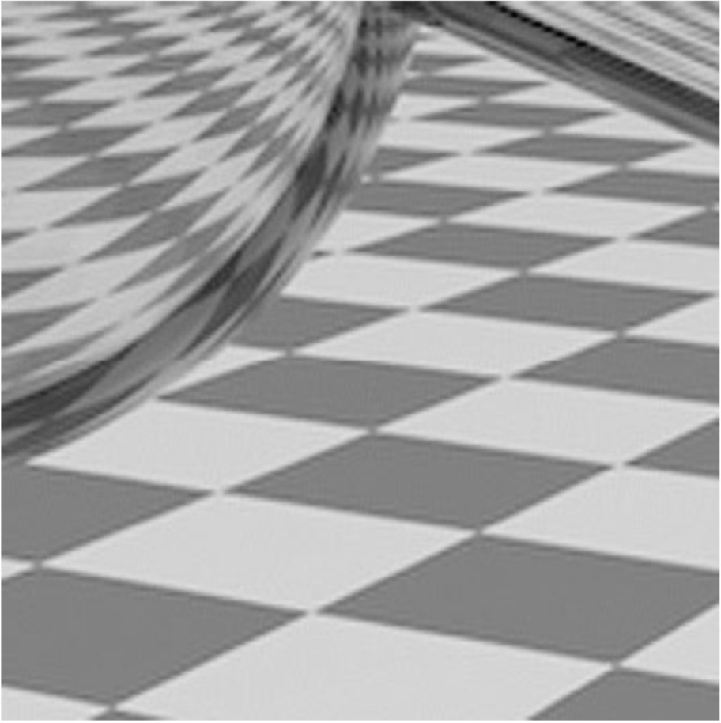
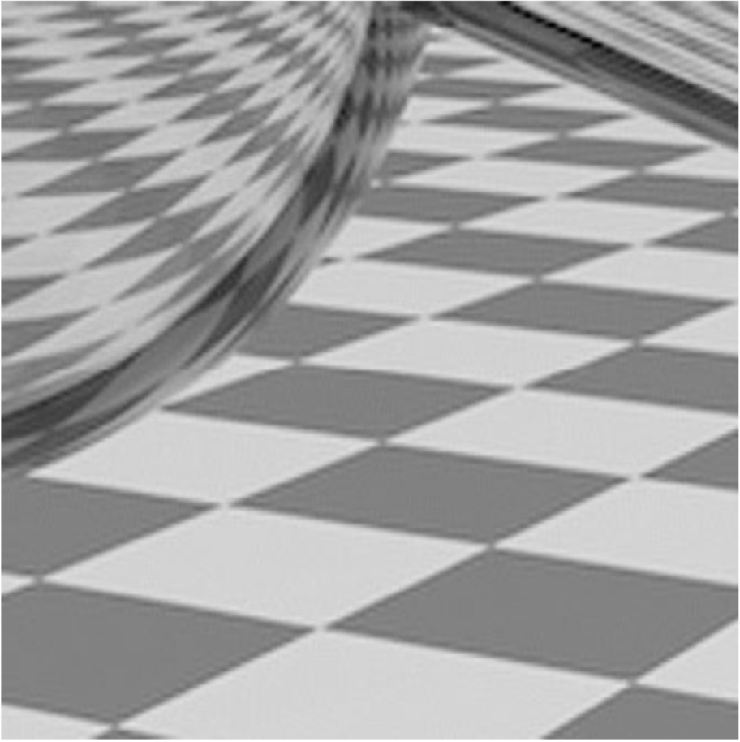

Our project is an exploration of style transfer, first creating works of novel art and then applying style transfer to various graphics concepts from the course! Our art was generated by following the original style transfer paper, Gatys 2015, based on convolutional neural networks. We optimized two loss functions, content and style, from the extracted features of the CNN. After amassing a collection of images and artwork, we ran our model on multiple combinations of content and style input images and fine-tuned our hyperparameters accordingly to produce the best artwork possible. We then tried to emulate as many graphics concepts as possible through the use of style transfer. Some, admittedly, did not yield successful results (i.e. global illumination, materials, image refocusing, object retexturing). However, we successfully were able to emulate antialiasing (transferring the sharpness of a similar image onto the content of an aliased image), image relighting (capturing the lighting of one image as a “style” and transferring that to the same scene taken at a different time of day), and texture mapping (capturing the bumps and style of a painting onto the texture map of an object). After realizing that 2D to 3D style transfer (i.e. mesh manipulation) would be too difficult to tackle, we dove into virtual reality. We rendered a style-transferred scene (by running our model on a 360 stereoscopic image) in an iOS app we built in Unity using the Google VR SDK.
Our implementation is based on Gatys 2015. Thankfully, Style Transfer is very well documented and there were plenty of online resources that made it straightforward to get started. We found this tutorial to be especially helpful.
At a high level, style transfer works by optimizing a content and style loss function that inform how the output image should be manipulated at a given training step. At first, the output image can be thought of as white noise that incrementally becomes more and more like the content and style images at each step. Ultimately, this results in an image that is a novel combination of the two inputs.
Our style transfer model is based on an implementation of VGG19 that was pre trained on ImageNet. This model is well known for its strength as a feature extractor, making it the perfect candidate for style transfer. In order to use this model for style transfer, there are a few main changes that needed to be made. Firstly, we had to define two loss functions, a content loss and a style loss, which each compute the differences between the output image and their respective feature map (the output of a convolutional layer). Secondly, we had to make the output of each convolutional layer available to the loss functions. With those two components in place, we could then define an optimization scheme that minimizes both the content and style loss of the output image.
Once we had a basic implementation working, we began to perform hyper parameter tuning. Generally, fine tuning a neural network is a very empirical process-- this one was no different. The subjective nature of the “quality” of the output image is what made tuning this network a unique challenge. There were a few main parameters to tune: the set of convolutional layers used, the style weight, the content weight, and the number of “training” iterations. We followed the same general pattern to find the appropriate set of values:
At times, tuning our model to get the results we wanted felt much more like an art than a science. We had a long list of experiments we wanted to explore, and each one of them required a different set of hyperparameters. A crucial aspect of each experiment were the chosen content and style images; these played an important role in the success of an experiment.
 

For Anti Aliasing, we first began by simply using identical aliased and anti aliased images as content and style, which worked extremely well! However, we felt that this was a bit unfair, so we then began to experiment with using various style images to see if we could find a general anti aliasing style image. We discovered that what worked best was a antialiased pattern that contained similar features and colors of the aliased content image.
For Image Relighting, we took a similar approach to anti aliasing and found that similar and identical images worked well. We were able to achieve impressive results on identical images taken under different lighting conditions as well as similar images taken under different lighting conditions. A potential way to extend the results of anti aliasing and image relighting are to perform style transfer on separate masks of the image, rather than the entire image.
For texture mapping, we looked online for a blender file containing an animal model with a texture map. Once we found one (using sites such as free3d), we downloaded the model and rendered it in blender. We were relatively unfamiliar with blender, so we watched a couple tutorials on how to input a nice scenic background for our penguin render and how to map our newly style transferred textures onto the penguin. We ran our penguin’s texture map through our model using a variety of styles until we got results with satisfying features results. These ended up being due to paintings with very distinct styles and textures (i.e. with visible and thick brush strokes) that we could easily see these features on the texture map itself.
We began by implementing a naive version of stereoscopic style transfer, which involved simply just applying our style transfer model to the left and right stereoscopic images separately. This worked surprisingly well, but it did cause some fatigue, as the style transferred images had small discrepancies that had a noticeable effect on the depth information within the image. A way to extend this implementation would be to implement a spatial loss function, that enforces a depth constraint in order to preserve the depth component of the image.
To make the VR Viewer, we used Unity and the Google VR SDK. Google’s SDK made it very simple to get a basic VR Scene up and running. They abstract the left and right cameras into a unified VR camera with head tracking that makes it easy to plug into any generic Unity Scene. The most complicated aspect was finding a way to view the 360 stereoscopic images. A simple way to do this is to map each image onto the inside of a sphere that surrounds the camera, and to send the left and right eyes their respective image spheres. However, after implementing this we fund that our implementation wasn’t quite robust enough, so we utilized a 360 stereoscopic shader from the Unity Asset store that can be found here.
During our graphics exploration, we also had many failed experiments that produced fun and interesting results!
First, we investigated whether we could transfer global illumination through inputting two images with and without it as our style and content images respectively. However, our model did not pick up interesting portions of light.
Second, we tried to restyle images via different materials, such as specular metals. However, the style transfer seemed to get diluted by the surrounding scene of the image and did not yield successful results.
Last, we attempted to emulate image refocusing by using a focused image as the “style” and applying it to a blurry image. However, the unfocused content image seemed to overpower the style image.
One of the problems we encountered during our project was, after already getting our new proposal approved Vivien and heavily working on our style transfer model, realizing that our project fell outside the scope of the course and was not quite as technically robust as expected for a final project. After talking with Vivien, we decided to ideate on further use cases of our style transfer model and see what areas of the course we could apply our pre-existing work to. After brainstorming a list of concepts, we decided reposition our project as an exploration of style transfer rather than just a gallery of style transferred artwork. We then spent our remaining time trying to implement these various graphics concepts (our virtual reality app taking up majority of the time) so we could finish our semester with as satisfying and rewarding a project as possible.
Since we were unfamiliar with blender, we ran into some problems when we wanted to make our render scene more interesting by placing an Antarctica background behind our penguins. However, our background would only show up in object view and would not be shown in our render. We were able to circumvent this issue by following a blender tutorial and mapping our background onto a plane that we then set behind our penguins.
As mentioned earlier, fine tuning a neural network depends heavily on trial and error, which can be very frustrating as seemingly random modifications can be the difference between a positive and negative result. In order to overcome this challenge, we had to be methodical in our experimentation procedure. We made an effort to only make small, isolated changes to our model and pipeline in order to discourage the introduction of confounding factors. This careful and deliberate experimentation procedure kept us from running around in circles and allowed us to make significant progress on our style transfer experiments.
The top lesson learned is that there are lots of applications of style transfer (2d to 3d, texture mappings, etc)! And beyond just the novelty of the art that it produces, there is plenty of potential for style transfer within core computer graphics problems left to explore that can yield very effective results.